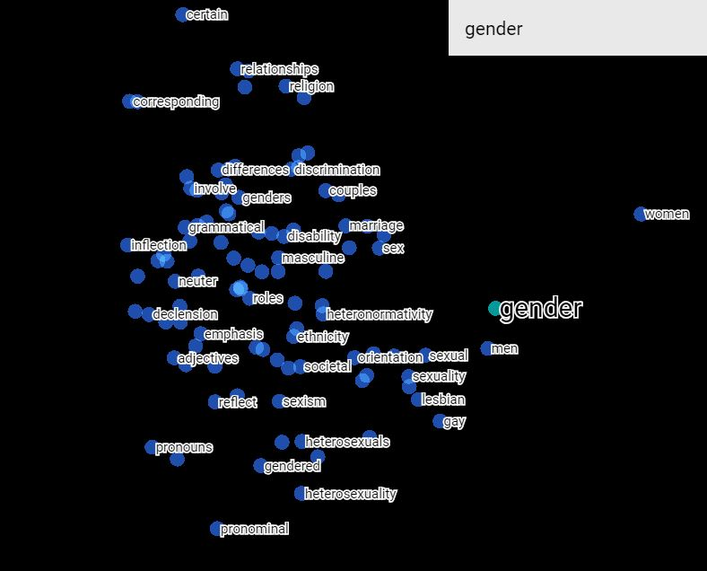
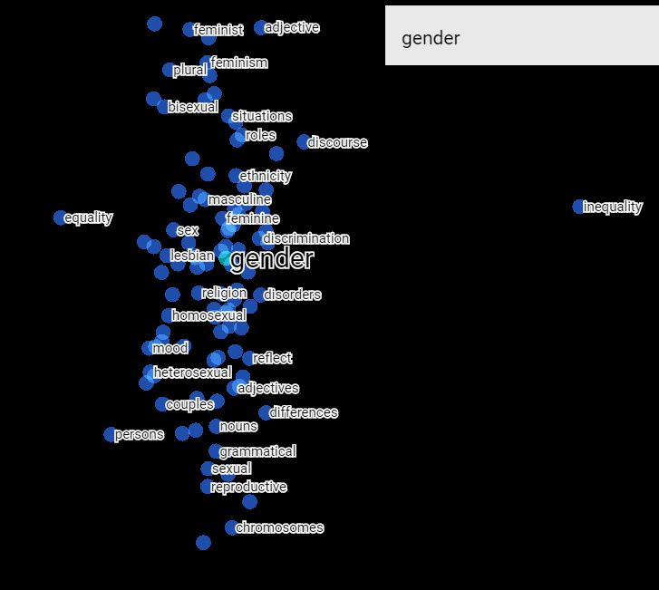
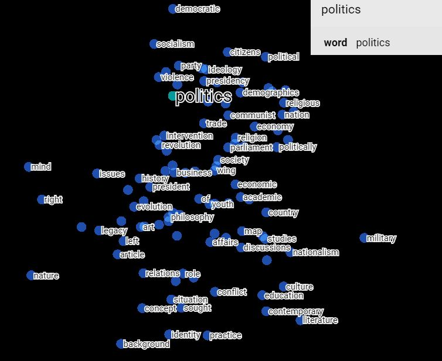
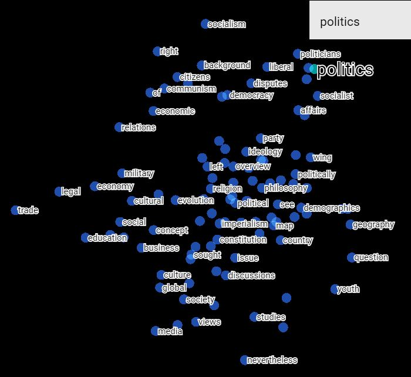
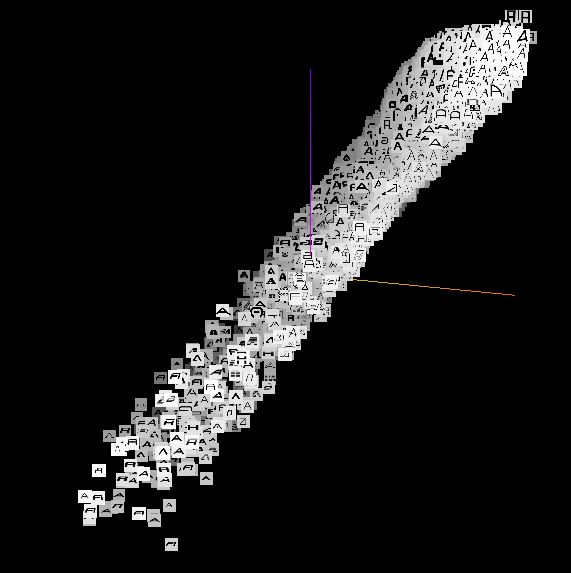
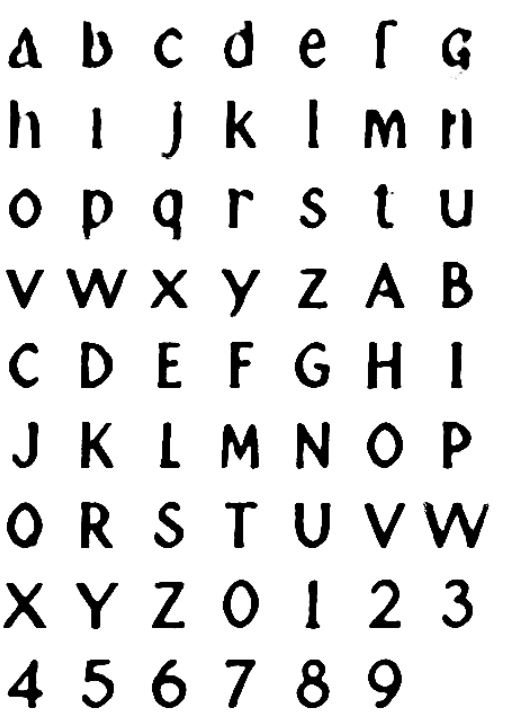
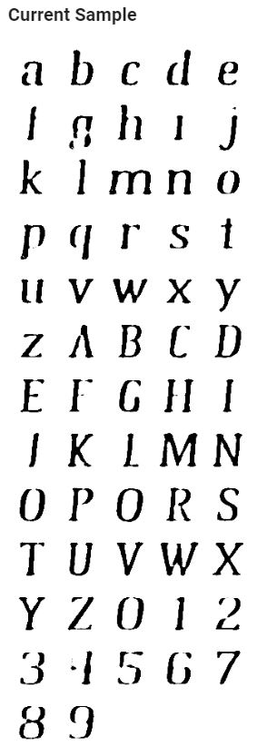
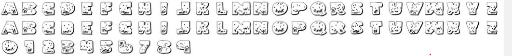

Assignment: 4
Name: Bibek K Pandit
Email: bibek@mit.edu
- 1.1 Spend some time using the embedding projector to make and share observations about the MNIST data. Do the different digits separate into distinct clouds? Are there images that are in the wrong cloud, and can you make sense of why they are wrong? Are there images that are outliers from the rest of the data? Are there digits that seem more separate from the others, and are there pairs of digits that are more easily confused? Take notes on these and other observations that you make and write them up for your assignment.
- Different digits separate into distinct cloud. Some images are in the wrong cloud. Some 1’s are in with 6’s are some 6’s with 1’s. Similarly, the some 2’s that look like 7’s are with 7’s and vice versa. Some 1’s and 6’s look very similar, same with some 2’s and 7’s. There are not really any outliers from the data, but some 6’s and 8’s are way far away from their own respective clouds and towards the periphery of the entire dataset. 0’s, 2’s and 8’s seem to be more separate than others as well as from each other. 3’s, 4’s, 5’s and 7’s are more blended in with others as well as themselves. Also the 6’s have a very distinct clump, but some of them are confused as a 0 and others as a 1.
- 1.3 Remember that this geometry is not based on any word definitions, but rather only the frequencies with which words co-occur in phrases. Also keep in mind that the vertical positions of the words are random, although you can specify these, too, by setting “up” and “down”. Experiment with various words to see if you can identify any insights about the data set. For example, try “politics” along the dimension from “bad” to “good”, or “engineer” along the spectrum from “man” to “woman”. Write up some notes on your observations, perhaps supplemented with a few pictures. Do you get different or better results if you use Word2Vec All instead of 10K? Did you find any interesting examples that speak to how words are used news articles? Write up what you experimented with and what conclusions you drew.
- I cannot really tell the difference between Word2Vec All and Word2Vec 10K. They are different but both seem equally good. I searched for words “gender” and “politics” and got list of words that are often used in news articles. I have attached some images that display that correlation.
Word2Vec All

Word2Vec 10K

Word2Vec All

Word2Vec 10K

- 1.5.1 View the fonts with PCA embedding. Do you see any clumps/areas with obvious characteristics? Record a few Font IDs for distinct characteristics/groupings that you find interesting (hover over a character to get its font ID), such as bold, italics, cursive...etc. You will use this in the homework.
- Interesting Example: America is to burger as China is to Peking_Duck!
- 1.5.2 Change to the embedding to T-SNE. Record how many iterations you let T-SNE run for for and whether or not you were able to get interesting groupings. Again, record Font IDs for interesting fonts/groupings.
- I let T-SNE run for 357 iterations. Everything collapsed into one line, so I could not see much groupings. However, if you look at the image below, you can that the fonts in the top part are distinctively different from the ones at the bottom.

- 1.5.3 Find a font you like, get its ID, and type that into the search bar at the right-hand side of the screen. Use the "neighbors" slider to isolate a few dozen points and record the Font IDs of the 10 nearest neighbors that make sense. Repeat this for 3 or 4 fonts. If you find a font that doesn't have nearest neighbors that look similar, note that down as well.
- 6049: 7380, 4110, 5301, 2253, 2251, 1799, 3168, 1800, 4303, 1802, 7593
- 469: 2389, 5755, 5754, 6957, 4707, 6949, 4468, 5349, 5442, 4464
- 7012: 7011, 6998, 7007, 7017, 7015, 7008, 7014, 7013, 7019, 7010
- 2.3.0 Edit FontModel.js so another character besides "r" is being displayed as the sample character for the 40 attributes. Edit Alphabet.vue so that all of the uppercase, lowercase, and numerical sample font characters are displayed in the right side of the screen instead of just the lowercase characters. Take a screenshot for your writeup.
- Changed "r" to "k" and updated Alphabet.vue! Link to Alphabet.vue and FontModel.js

- 2.3.1 Edit VectorChooser.vue to add a new button under the "Apply vector math" button. The new button should show the font Id of the "nearest neighbor" font that is "most similar to" the current font, out of all the fonts in the 50K training set.
- [24162, 29330, 2, 56440, 56439, 5, 56432, 56429, 56428, 9] are the ten most similar fonts to [0,0,0,0.20000000298023224,0,0,-0.10000000149011612,0,0,0,0,-0.30000001192092896,0,0,0,0,0,0,0,0,0,0,0,0,0,0,0,0,0,0,0,0,0,0,0,0,0,0,0,0].
Original

Most Similar

- The two fonts are clearly not the same. I could not figure out why my calcultion gave this.
- 2.3.2 What is the “average” of a set of fonts? (Hint: What does that mean in terms of the 40 dimensions)? Write some code to Find the nearest font neighbor to the average font.
- Check out the average method in VectorChooser.vue(Link at the bottom).
- 2.3.3.a Try to add this vector to any font. You may do the basic vector math by modifying the “Apply Vector Math” button in VectorChooser.vue or adding a new button/functionality.
- Here is the link to VectorChooser.vue.